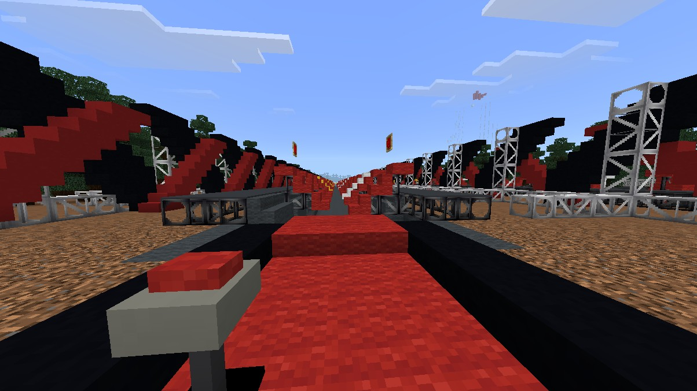
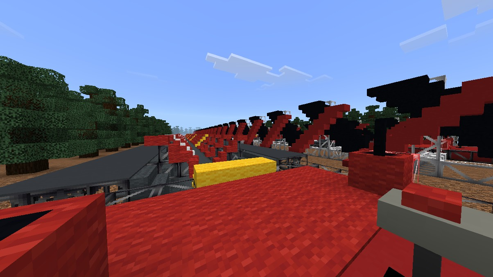
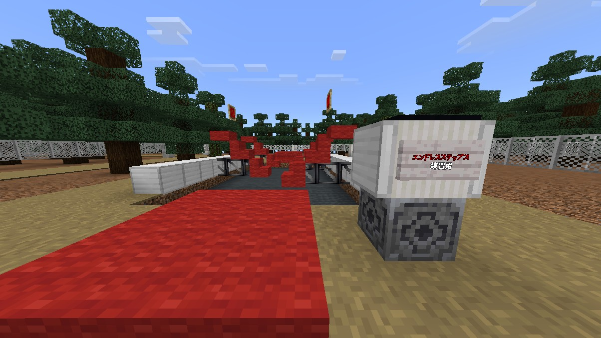
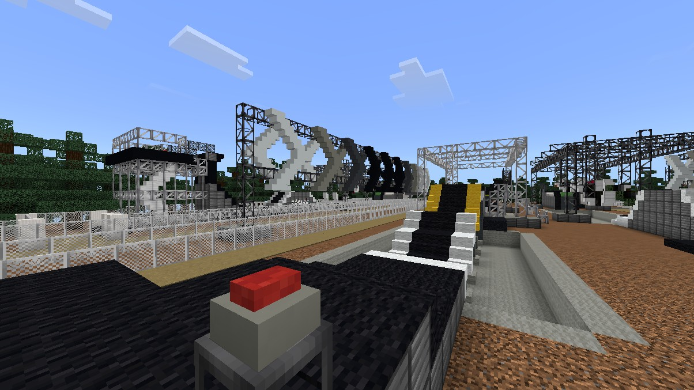
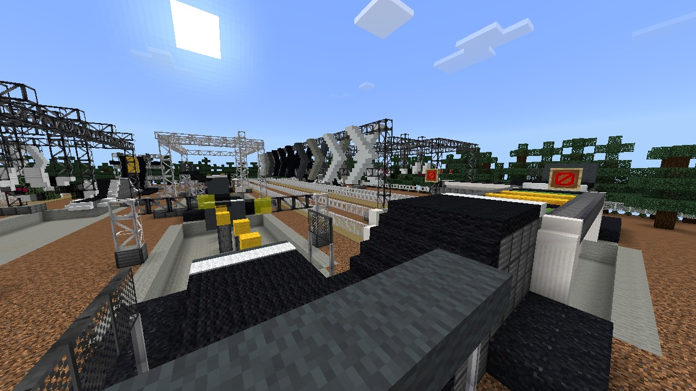
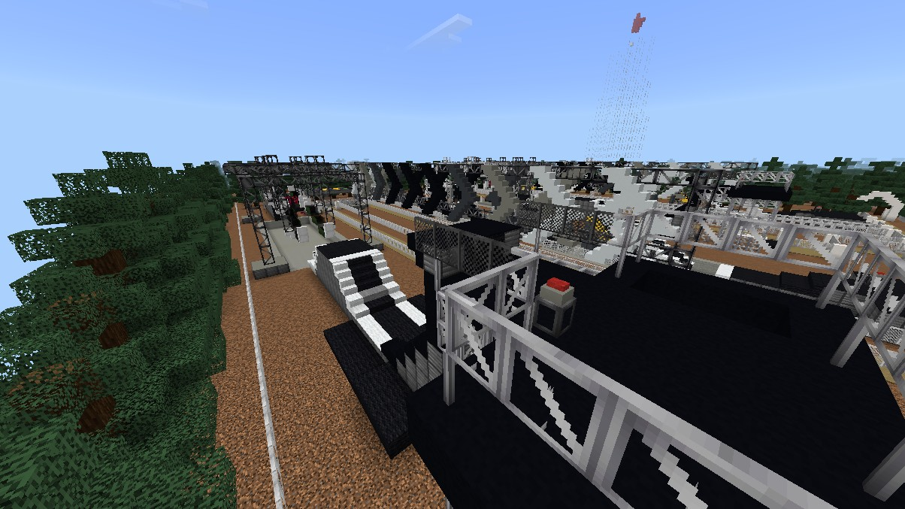
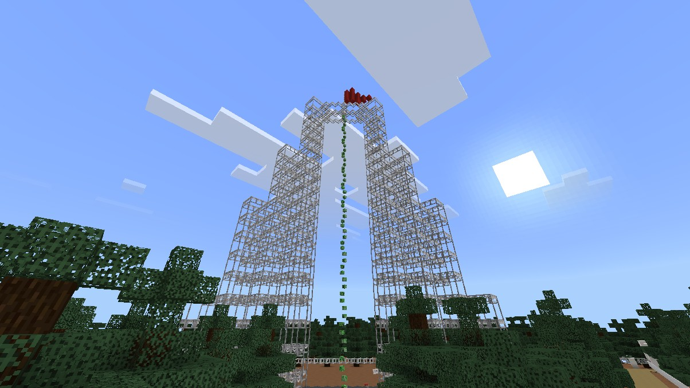
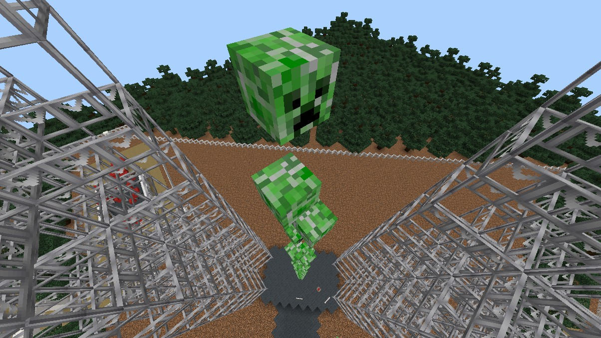
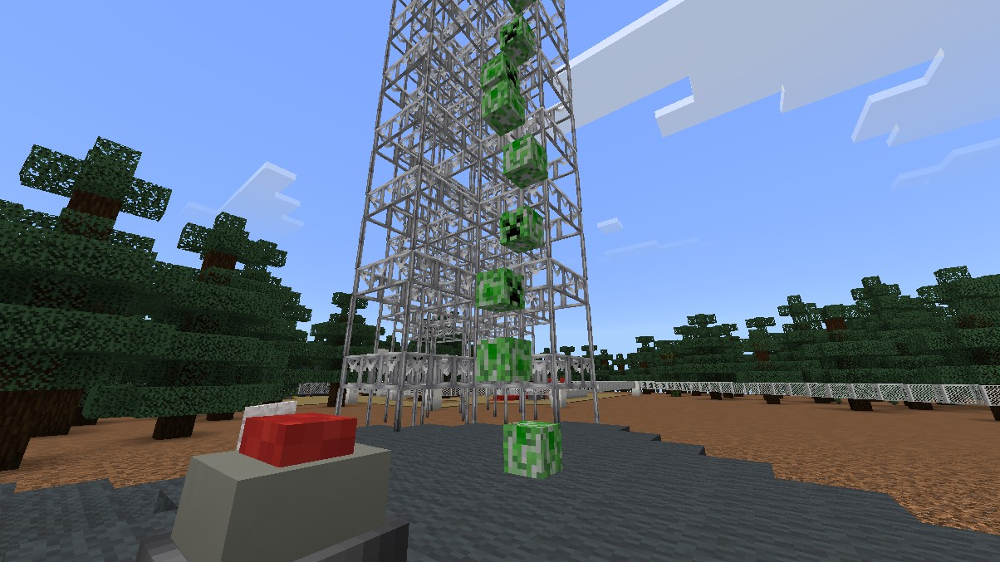

ABOUT
概要
《企画内容》
SASUKE for Minecraftは、TBSテレビの番組『SASUKE』をMinecraft Bedrock Editionで再現する企画です。
◆ 予選会
本選の出場枠は50枠です。前回大会で 1st STAGE をクリアした7名はシードとして本選出場が決まっているため、残る43枠を予選会で争います。
予選会は3種目で行い、種目ごとの順位に応じてポイントが付きます。順位の数字がそのままポイントになり（1位は1ポイント）、3種目の合計が小さい選手ほど上位となります。各種目は2回まで挑戦でき、より良いほうの結果が記録になります。種目間に優劣はなく、出場者は記録のみで決まります。
-



1エンドレスステップス
70個の足場を渡る飛び石です。スタートのボタンでタイマーが動き、ゴールのボタンで記録が残ります。落下した場合は、到達した位置とそのタイムが記録になります。足場には透明な壁があり、近道はできません。足場が4つだけの練習セットで練習することもできます。
-



2スプリントターン
6つのエリアが続く1本のコースです。飛び石、梯子への跳び移り、障害物付きの飛び石、スライムとハチミツの不安定な足場、ツタを使った移動、高い壁の順に進みます。ゴールまでのタイムを計測し、途中でリタイアした場合は到達エリアとそのタイムが記録になります。
-



3ロープクライム
制限時間30秒でどこまで登れるかを競います。記録になるのは最高到達点ではなく、30秒が経過した時点でいた位置です。途中で落ちると記録が大きく下がります。
◆ 本選
本選では、予選会を通過した選手が4つのステージに挑戦します。ステージごとに設置されたエリアを突破し、完全制覇を目指します。
ステージを選ぶと、各エリアの紹介を見ることができます。
SCHEDULE
開催期間
| 予選 | 2026.9.11[金] 18:00～2026.10.04[日] 23:59 |
|---|---|
| 本選 | 2026.10.10[土] 20:00～2026.10.11[日] 25:00 |
※予選の開始日時は、募集ポストを投稿した日時です。
※本選は生配信中のタイムテーブルを参照してください。（後日追記）
OFFICIAL SNS
公式SNS
本企画に関して質問がありましたら、各運営までお寄せください。
CREDITS & DISCLAIMER
クレジット
◆ 制作スタッフ
制作に携わったメンバーは、制作チーム紹介のページに掲載しています。
制作チーム紹介を見る◆ アドオンなど
ビヘイビアパック
| 名称 | 作者 | 用途 | 配布 |
|---|---|---|---|
| FMC_AdBP | ゴストノ | forMinecraftビヘイビアパック | 自作 |
| SASUKE Pack 19.1.0 beh | 乾燥帯 様 | SASUKEテクスチャパック | 【Minecraft統合版】SASUKEテクスチャパック ver.19.1配布【DOWNLOAD】 |
| gs_skullblock BP | ゴストノ | 透明ブロック、可視化ブロック専用アドオン | 自作 |
リソースパック
| 名称 | 作者 | 用途 | 配布 |
|---|---|---|---|
| FMC_AdRP | ゴソラソ | forMinecraftリソースパック | 自作 |
| SASUKE Pack 19.1.0 res | 乾燥帯 様 | SASUKEテクスチャパック | 【Minecraft統合版】SASUKEテクスチャパック ver.19.1配布【DOWNLOAD】 |
| gs_skullblock RP | ゴストノ | 透明ブロック、可視化ブロック専用アドオン | 自作 |
免責事項
- 本企画は、TBSテレビの番組『SASUKE』を題材として、ファンが制作した二次的なオマージュ企画です。
- 本企画は、TBSテレビおよび番組『SASUKE』の関係者とは一切関係がなく、承認・協賛を受けたものではありません。
- 本企画は、Minecraftの公式企画ではありません。Mojang Studios および Microsoft とは一切関係がなく、承認を受けたものではありません。Minecraft は Mojang Studios / Microsoft の商標です。
- 掲載内容は予告なく変更する場合があります。